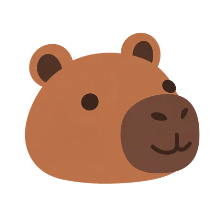
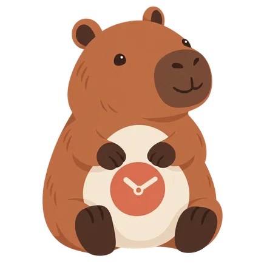

Six ways to simplify Mellow. Try the faces at actual favicon sizes, compare each with the original, and find the right balance of character and clarity.

These are actual CSS pixel sizes. Use the slider to see what survives.

Original